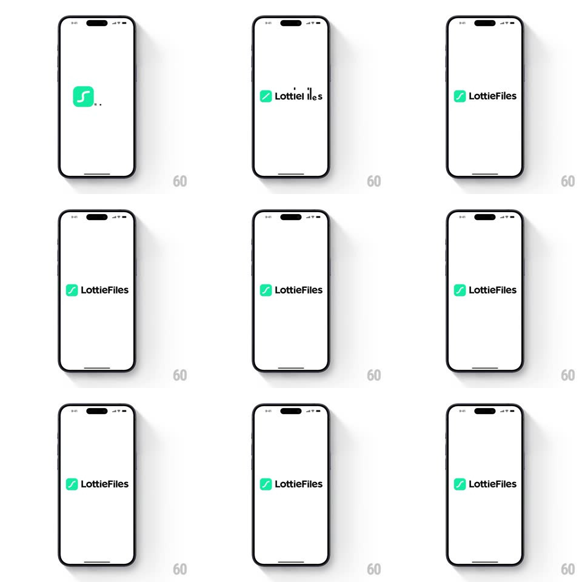

Media
Frame-by-frame

Rebuild this interaction 1:1: the LottieFiles splash - on white, the green squiggle mark snaps into its rounded square, then the letters of "LottieFiles" slide in from scattered positions and snap into the wordmark beside the icon, settling into the final logo lockup.

Rebuild this interaction 1:1: the LottieFiles splash - on white, the green squiggle mark snaps into its rounded square, then the letters of "LottieFiles" slide in from scattered positions and snap into the wordmark beside the icon, settling into the final logo lockup. ## Integration Integration: stack-agnostic spec - springs given as stiffness/damping, timed motions as duration + curve; map every value to your framework and animation library of choice. ## Scene Plain white screen. The logo: a green rounded square with a white hand-drawn squiggle, followed by "LottieFiles" in black geometric sans. The animation is the assembly of this lockup. ## Motion spec Pattern: typographic assembly. - The green square pops in first (scale 0 -> 1 with a back-out overshoot, spring ~340/18, 400ms), the white squiggle drawing on inside it (stroke trim 0 -> 100%, 350ms, starting 100ms in). - Letters fly in from scattered offsets (each from a different direction, translate +/-40px, rotation +/-20deg) and snap into place one by one (spring ~380/20 per letter, 50ms stagger left-to-right). - The "F" in Files and the icon squiggle share a beat: the last letter lands with a tiny bounce that nudges the whole lockup (translateY -2px -> 0, 150ms). - Hold the final lockup static; splash exits with a simple fade (250ms) into the app. ## Calibration - Each letter has a different entry vector - the scatter is the personality. - Snaps are tight and percussive - high stiffness, brief settle, no drifting. ## Reduced motion Logo fades in fully assembled (300ms). ## Don't miss - The squiggle inside the icon is hand-drawn and slightly uneven - not a perfect curve. - The letters land in reading order, left to right - the stagger direction matters.